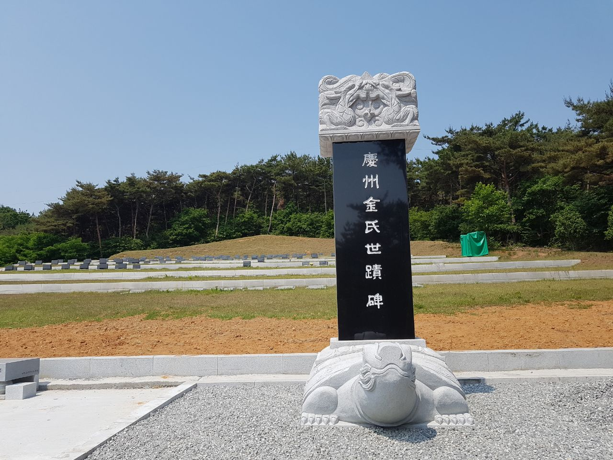
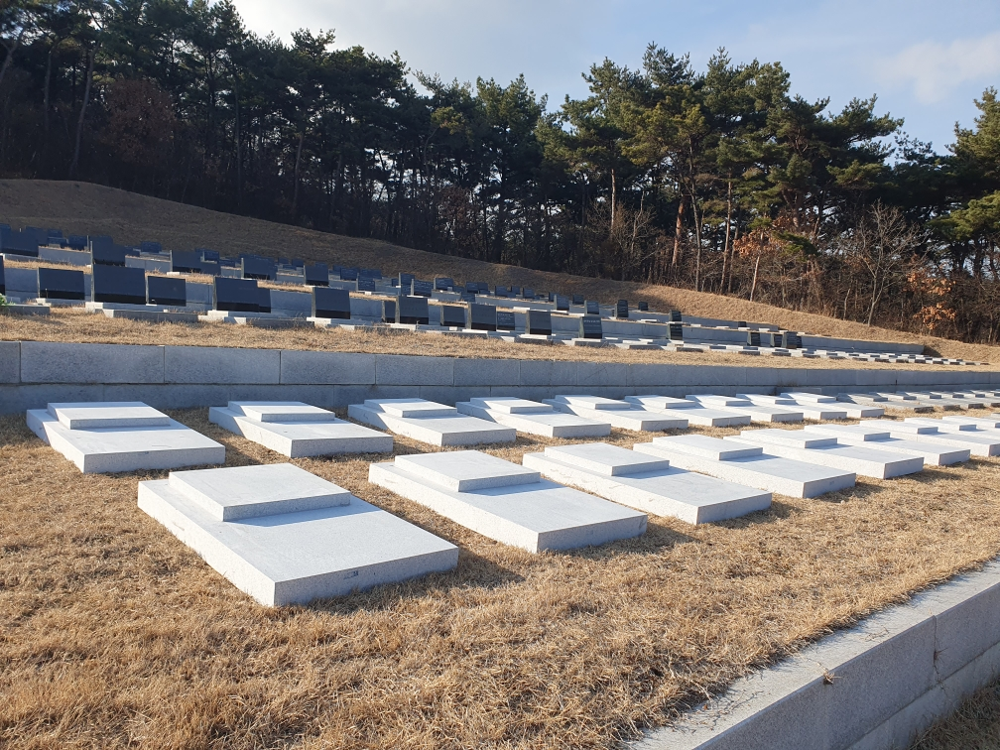
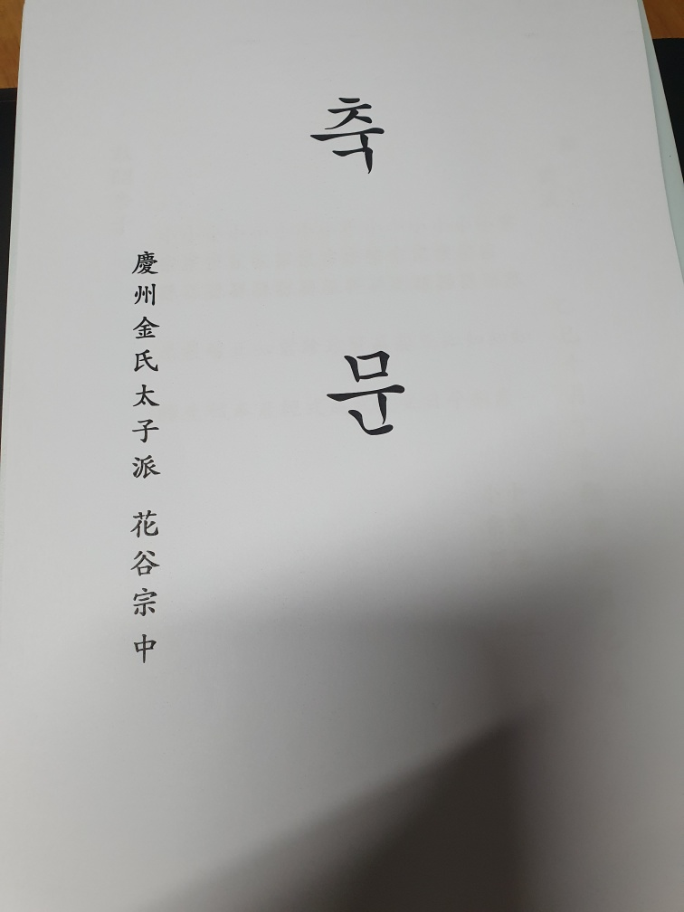
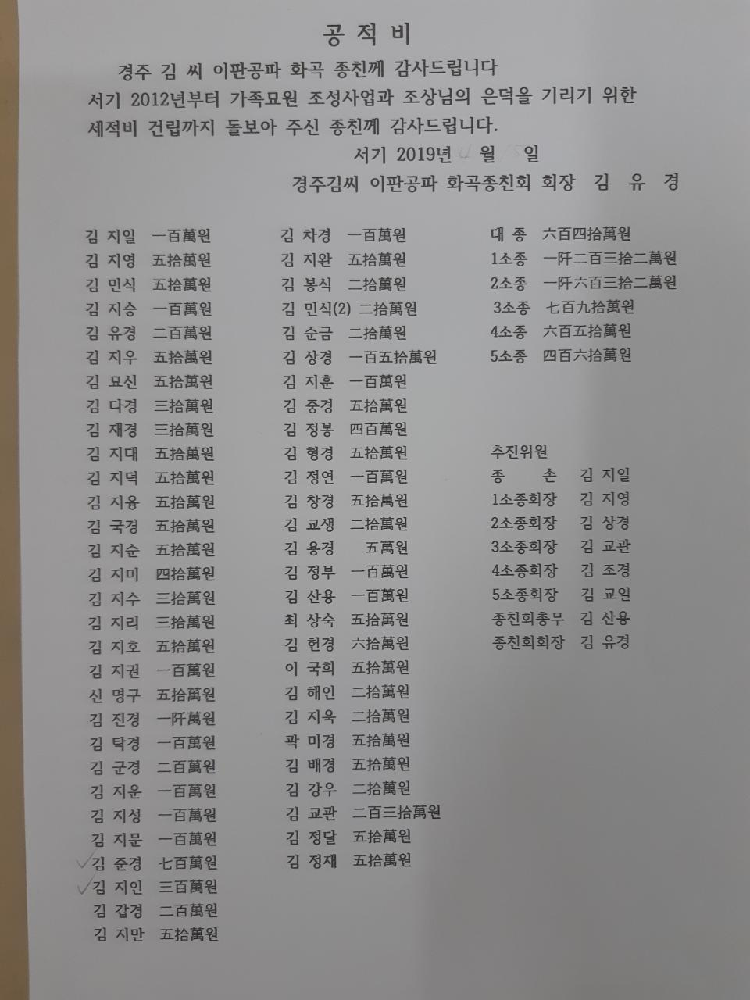
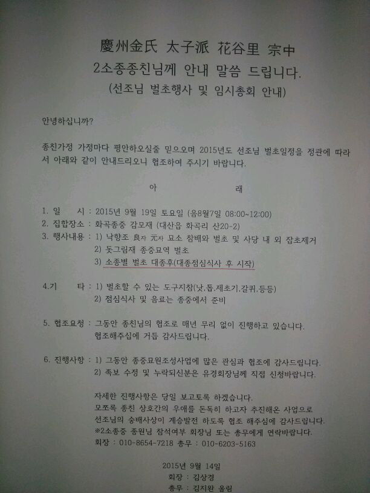
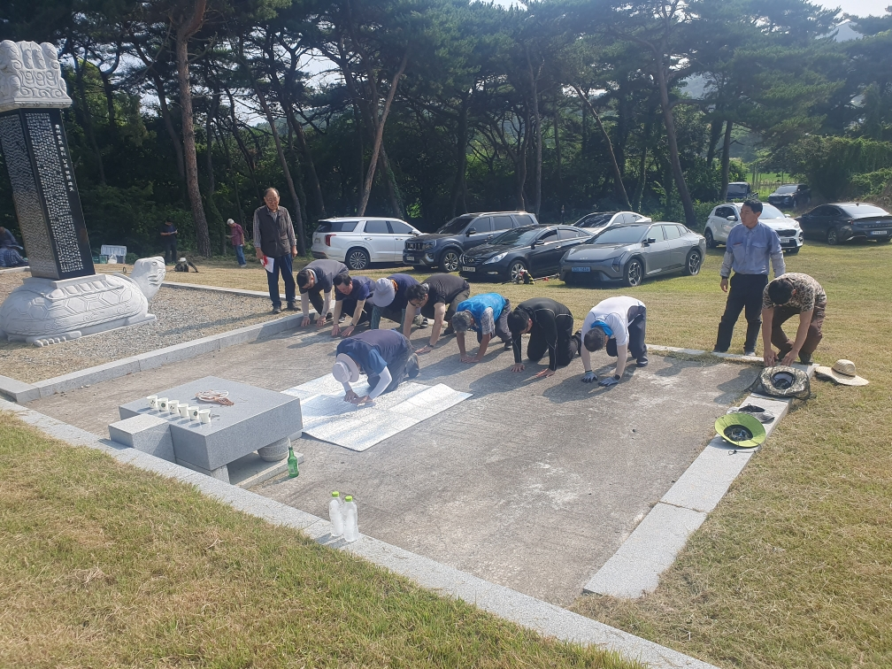

08
15-2 세대
항렬 추정김지훈
1976.09.04 · 김상경의 아들
종친회 납부현황의 ‘상경 자’ 표기와 부모 묘비 뒷면의 ‘아들 지훈’ 표기가 서로 일치합니다. 이름의 지(知) 한자는 항렬표에 따른 추정입니다.
세수시조 62세손 · 중조 34세손 · 계림군 21세손
慶州金氏 · 花谷門中
경주김씨 화곡문중의 계보와 서산 가족묘원 기록을 한곳에서 살펴보는 김지훈 가족의 디지털 기록관입니다.

慶州金氏世蹟碑
서산 화곡 가족묘원

나의 직계 계보
이름을 누르면 해당 세대의 세수와 확인 내용을 볼 수 있습니다.
1976.09.04 · 김상경의 아들
종친회 납부현황의 ‘상경 자’ 표기와 부모 묘비 뒷면의 ‘아들 지훈’ 표기가 서로 일치합니다. 이름의 지(知) 한자는 항렬표에 따른 추정입니다.
근거 자료
같은 이름과 관계가 서로 다른 시기의 자료에서 반복되어 신뢰도를 높입니다.
김지훈 · 1976.09.04 · 상경 자(子)
제2소종 종친회 납부현황의 김지훈 행에서 생년월일과 ‘상경 자’ 표기를 확인했습니다.
파계 표기 대조
넓은 파에서 실제 운영 단위까지 단계가 내려가며 서로 다른 명칭이 사용됩니다.
현재 조사한 사진 72장과 기존 계보 자료에서는 장군공파라는 문구가 확인되지 않았고, 이판공파 표기가 반복됩니다. 두 명칭의 관계는 족보 원문 대조 전까지 확정하지 않습니다.


묘원 연혁
회의 안내, 공사 사진, 제향 자료를 시간 순서로 연결했습니다.
2019년 공적비 문안에 2012년부터 가족묘원 조성과 제막비 기금 마련을 추진했다고 기록되어 있습니다.

태자파 화곡문중 제2소종 명의로 벌초·잡초 제거와 종산 관련 회의를 진행했습니다.
묘역 기반을 정비하고 ‘慶州金氏世蹟碑’를 세워 화곡 종친의 조성 기록을 남겼습니다.
18기의 지단석과 40기의 각인 계획을 반영해 가족묘원 하단 구역을 정비했습니다.

정기총회와 별초·제향을 이어가며 종중 운영과 묘원 관리 기록을 계속 축적하고 있습니다.